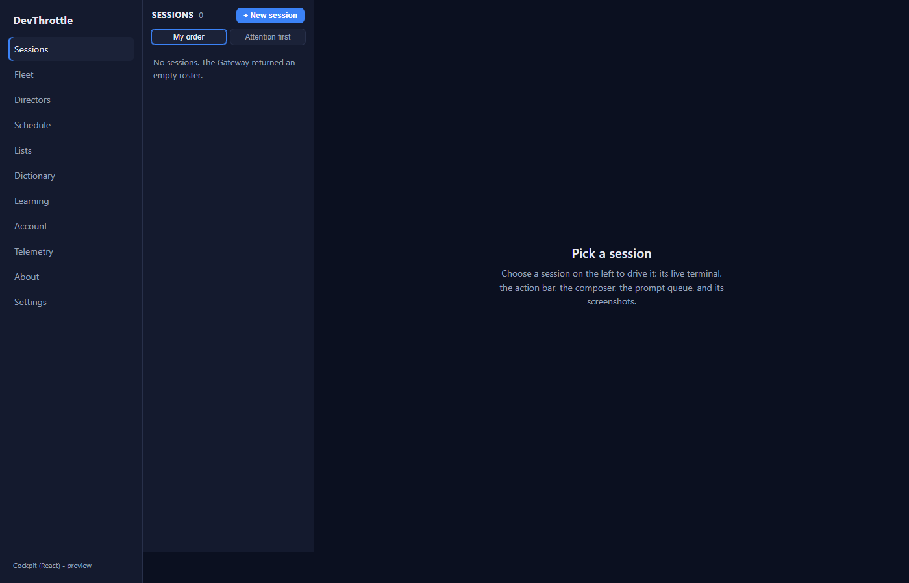
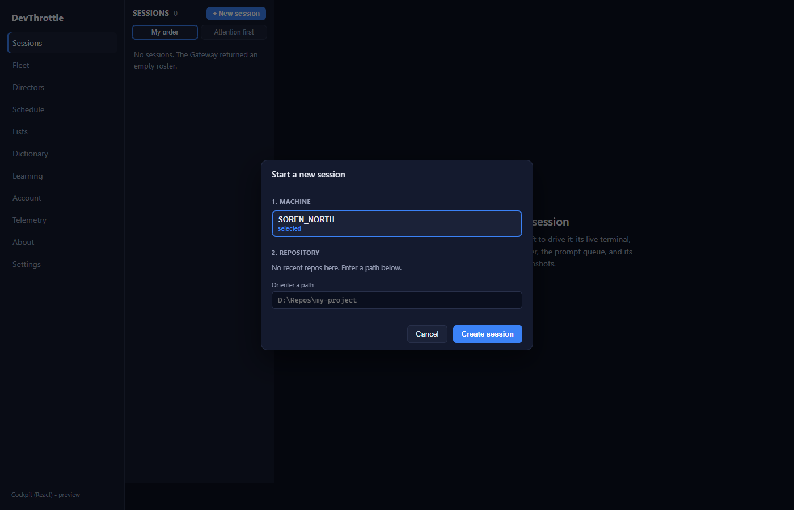
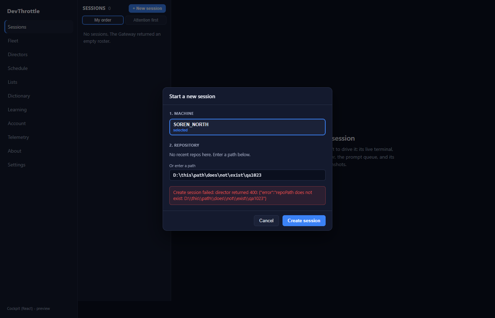
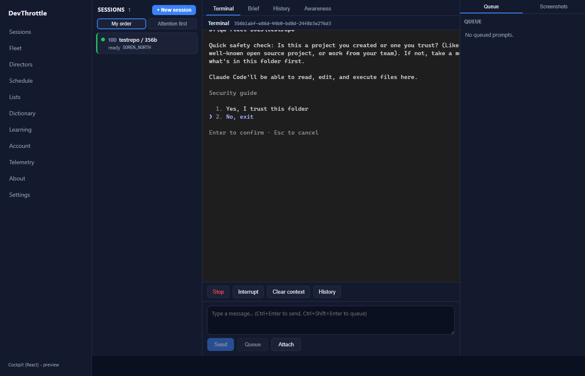

Feature: Add a "+ New session" action + dedicated machine/repository picker dialog
to the desktop React Cockpit roster (QA-sweep epic #967). Pull request #1038, branch
issue-1023-new-session.
Independent method. The QA Agent did NOT trust the developer report. It built the
pull-request branch in its own isolated git worktree, stood up a fully isolated Gateway plus one
isolated Director (a throwaway CC_DIRECTOR_ROOT so nothing touched the live fleet), served
the pull-request Cockpit through the Vite dev server proxied at that Gateway, and drove the real
browser with Playwright. Every screenshot below was produced by this QA run.
| Gate | Result |
|---|---|
Cockpit npm run build (tsc --noEmit + vite build) | PASS - 0 errors |
npm run lint (eslint, whole workspace) | PASS - 0 errors |
Gateway dotnet build -p:RunCockpitBuild=true | PASS - 0 warnings, 0 errors (staged cockpit into wwwroot/c) |
dotnet build cc-director.sln | PASS - 0 warnings, 0 errors |
| # | Criterion | Expected | Actual | Result |
|---|---|---|---|---|
| a | A clearly visible "+ New session" control on the roster/rail. | Visible control on the roster head. | "+ New session" button rendered on the Sessions roster head next to the count (qa-01, qa-02). | PASS |
| b | Opens a dialog listing real Directors + repos and creates a real session via POST /directors/{id}/sessions. |
Dialog shows the live GET /directors machines; creating issues the real POST and returns a session. | Dialog listed the live isolated Director "MACHINE-A" (auto-selected). Entering a valid repo path and clicking "Create session" issued POST /directors/{id}/sessions; the Gateway health then reported sessions:1 and the app navigated to /session/356b1abf-... (qa-02, qa-04). |
PASS |
| c | New session appears in the roster and is drivable (terminal renders + you can type). | Roster row appears; terminal renders live agent output; keystrokes reach the agent. | Roster showed "100 testrepo / 356b, ready, MACHINE-A". The Terminal tab rendered the live Claude Code agent booting in the repo (trust prompt). Focusing the terminal input and pressing ArrowDown moved the agent's selection cursor from option 1 to option 2 - keystrokes are delivered (qa-04, qa-05). | PASS |
| d | Bad repo path / unreachable Director shows a clean inline message, not a raw error. | A caught, styled inline message; the app does not crash and the dialog stays open. | A non-existent path produced a styled inline alert inside the dialog ("...repoPath does not exist: ...") and the dialog stayed open for correction - handled, not an uncaught crash (qa-03). | PASS |
| e | Uses a dialog (not a cramped inline form) and matches the Cockpit visual style. | A modal dialog on the Cockpit navy theme. | Rendered as a role="dialog" modal with backdrop, header, accent-highlighted selection, and a blue primary button - all on the shared Cockpit design tokens (var(--surface/border/accent/attention)). Matches the Cockpit look (qa-02). |
PASS |
| f | Full build gate clean. | Cockpit build, lint, Gateway RunCockpitBuild, cc-director.sln all clean. | All four gates returned 0 errors (see table above). | PASS |
Left navigation, roster ordering toggle ("My order" / "Attention first"), and session detail
(Terminal / Brief / History / Awareness tabs, action bar, composer, queue panel) all render normally.
Console errors observed were benign: a favicon 404, React Router v7 future-flag warnings (pre-existing),
a 404 from a QA-only direct navigation to the proxied /sessions path, and the deliberate
bad-path attempt (surfaced cleanly inline). No product regressions.
qa-01 - roster with the "+ New session" control

qa-02 - dialog open, live Director listed, Cockpit style

qa-03 - bad path clean inline error

qa-04 - real session created, in roster, terminal renders live agent
qa-05 - keystroke delivered (selection cursor moved to option 2)

VERIFIED - all acceptance criteria met. Isolated Gateway + Director; test session killed and Director stopped/deregistered at teardown; no phantom left in the live fleet.